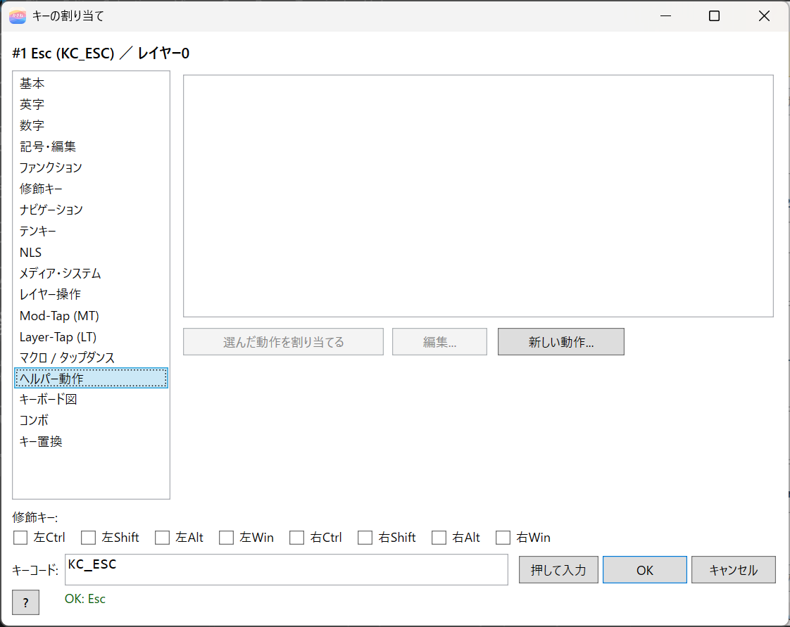
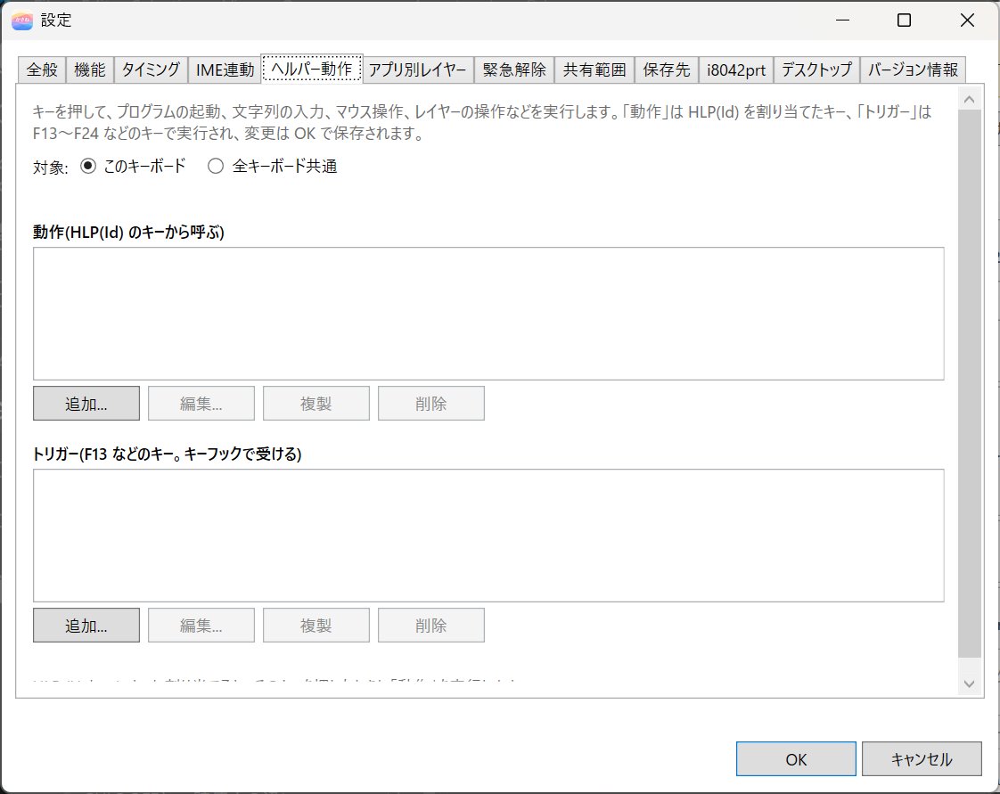
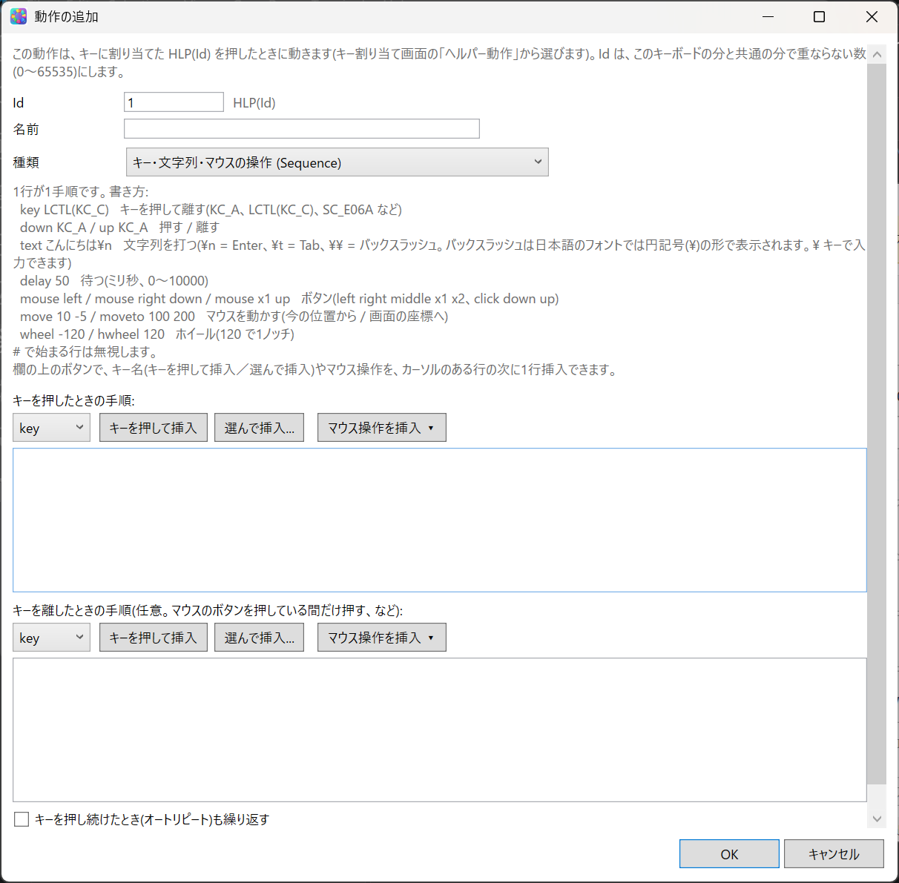
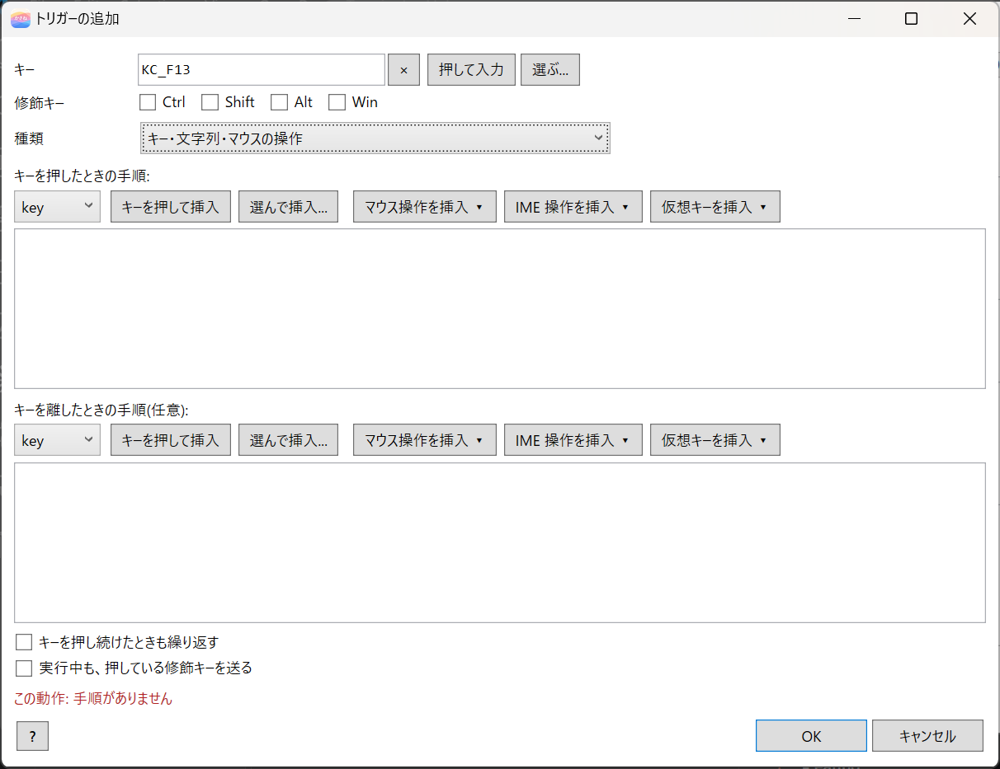
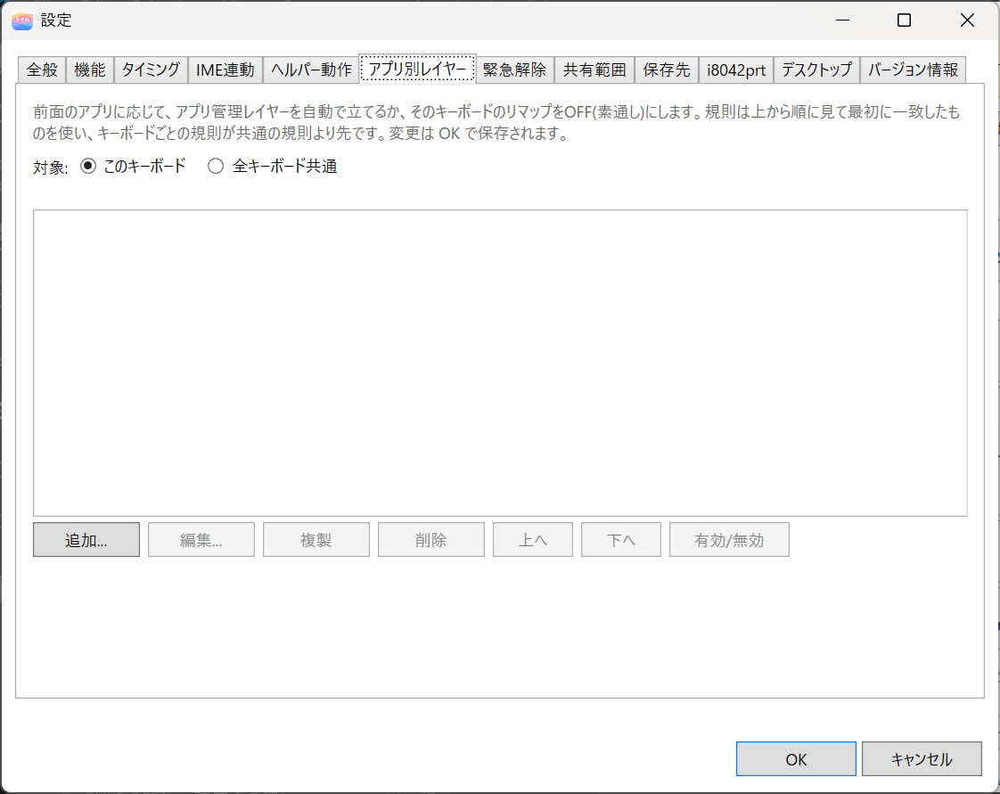
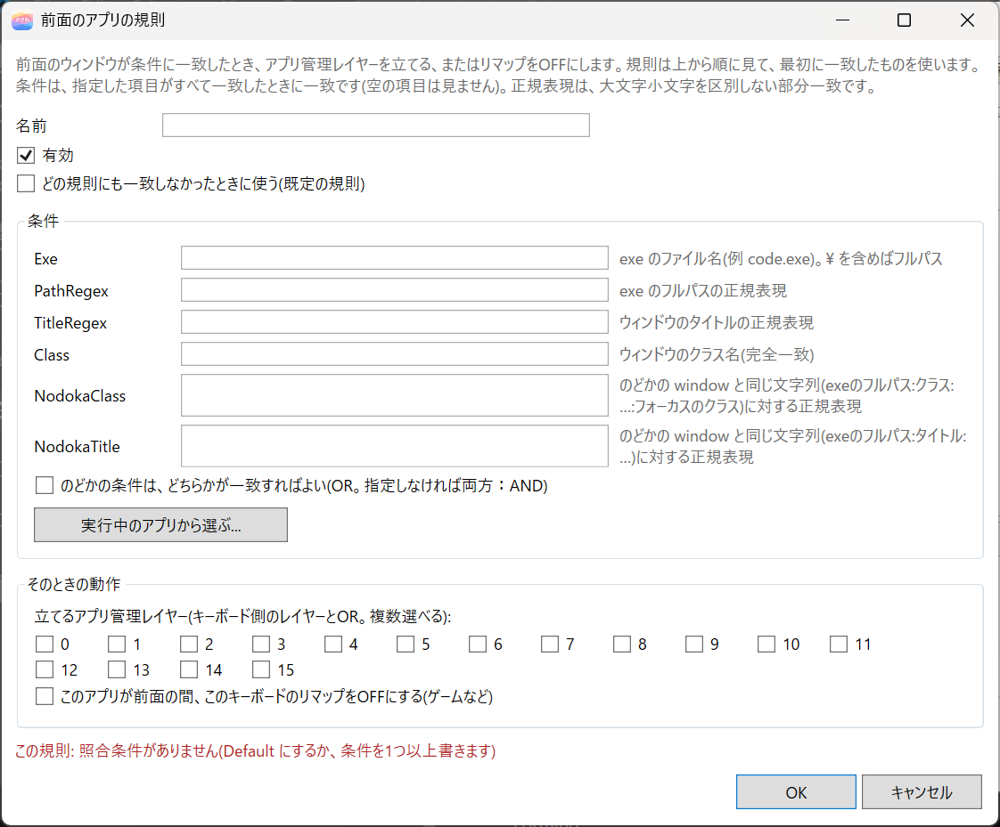
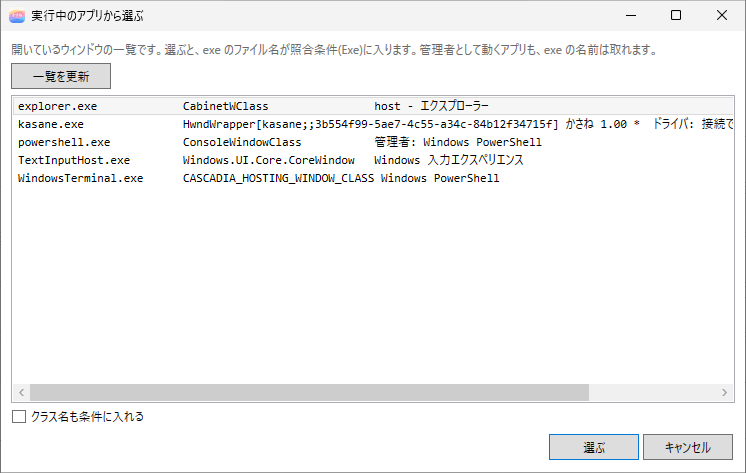

11. Helper Actions and Per-App Layers
kasane's tray runs actions outside the keyboard, triggered by keys.
- Helper actions: launching programs, opening URLs and files, typing strings (Japanese too), sequences of key input, mouse operations, layer operations, and toggling pause
- Per-app layers: enabling a layer to match the foreground app, or turning remapping OFF for that keyboard (for games and the like)
Both need the tray to be running. Saving the settings does not need administrator rights. When you save with OK in the settings dialog, the tray reads them again within a few seconds.
Two ways to use helper actions
| Method | Contents | Applying to the keyboard |
|---|---|---|
Assign an action to a key with HLP(Id) |
When you press the key, the key itself sends nothing, and the tray runs the action | Needed |
| Make a trigger | The tray watches keys such as F13 to F24 (and combinations with modifiers) and runs the action | Not needed |
When the tray is stopped, a HLP(Id) key sends nothing. A trigger key passes through as an ordinary key.
Example: launching Notepad with a key
- In the editor, click the key you want to launch Notepad with.
- In the list on the left of the window that opens, choose Helper actions and press New action....
- Set the type to Launch a program (Launch), enter
notepad.exeas the path, give it a name, and press OK. A code such asHLP(1)goes into the key. - Close the key assignment window with OK too, and press Apply to keyboard (ON).
- When you press that key, nothing is typed and Notepad launches.

When you press Helper... at the bottom of the editor window, the settings dialog opens with the "Helper actions" tab shown.
The "Helper actions" tab
You manage actions and triggers in lists. Choose the target from This keyboard and All keyboards (shared).

| Scope | Where it is saved | When to use it |
|---|---|---|
| This keyboard | <UniqId>\helper.json in the settings folder |
To run it only on that keyboard |
| All keyboards (shared) | tray.json in the settings folder |
To run it on every keyboard |
When looking for an action, the per-keyboard settings come first and the shared settings after. The Id of an action is 0 to 65535, and should be a number that does not overlap between this keyboard's and the shared ones.
With Up and Down below the list of actions, you can change the order of the list. The Id does not change, so HLP(Id) assignments stay as they are.
When you Delete an action, the key assignments and key overrides that use that HLP(Id) are listed in the confirmation. If you leave Also remove it where it is used (on by default) as it is, then when you press OK in the settings dialog, the key assignments go back to ▽ (transparent), and key overrides whose replacement is that action are disabled (the same as "Deleting, duplicating, and reordering" in 9. Macros, Combos, Tap Dances and Key Overrides).
- Only the keyboard that is open now is checked. When you delete an action that belongs to All keyboards (shared), the assignments on other keyboards cannot be checked.
- When an action with the same Id exists in the other scope,
HLP(Id)keys keep running that one, so the assignments are not removed.
Kinds of actions
| Kind | Contents |
|---|---|
| Launch a program (Launch) | Launches a program. For something on PATH such as notepad.exe, the name alone is fine. Environment variables such as %USERPROFILE% can be used. It does not elevate to administrator |
| Open a URL, file, or folder (Open) | Opens a URL, file, or folder with the associated app |
| Key, text, and mouse actions (Sequence) | Runs steps for keys, strings, waits, the mouse, the wheel, and IME on/off, in order |
| Type text (Text) | Types the string you set as it is. It is appended at the current position of wherever you can type now. A line break is sent as Enter and a tab as Tab. Japanese and symbols are sent as they are. Backslashes and the like have no special meaning. Up to 900 characters. You can also turn the IME off only while typing |
| Control app-managed layers (AppLayer) | The target is the keyboard on which the key was pressed. It works by OR together with IME linking and the foreground-app rules. It enables, disables, toggles, or enables app-managed layers only while the key is held |
| Pause / resume (PauseToggle) | Toggles pause and resume of the tray |
| Cut to end of line (KillLine) | Emacs C-k. Cuts to the end of the line, and chains what you press in succession onto the clipboard |
How to write a sequence
Write one step per line. Lines that start with # are ignored. In text, \\ is a backslash (in Japanese fonts it is shown as ¥ and can be typed with the ¥ key). ime looks at the current state and changes it only when it differs.
key LCTL(KC_C) Press and release a key
down KC_A Press a key
up KC_A Release a key
vk IME_ON Press and release a virtual key (IME_ON, IME_OFF, 0x16, LSHIFT+F1, and so on)
text Hello\n Type a string (\n is Enter, \t is Tab)
delay 50 Wait (milliseconds, 0 to 10000)
mouse left Click a button (left, right, middle, x1, x2)
move 10 -5 Move the mouse from its current position
moveto 100 200 Move the mouse to screen coordinates
wheel -120 Vertical wheel (120 is one notch)
hwheel 120 Horizontal wheel
ime off Turn the IME off (on, off, toggle)
ime off abort If it fails, stop the rest of this action

With the buttons above the box, you can insert lines (they go in after the line with the cursor).
| Button | Contents |
|---|---|
| Press a key to insert | Choose a command (key, down, up), press this button, and then press the key you want to put in. Esc cancels. The Win key and Alt+Tab cannot be captured |
| Pick and insert... | Choose a key from the keyboard diagram or a list |
| Insert mouse action ▾ | Choose a ready-made line for a button click, press, release, move, or wheel. Rewrite the numbers after inserting |
| Insert IME action ▾ | Choose a line that turns the IME on, off, or toggles it. You can also choose lines with the method fixed |
| Insert virtual key ▾ | Choose a line for a virtual key meant for the Japanese IME, such as IME ON, IME OFF, Hankaku/Zenkaku, Henkan, and Muhenkan |
A sequence can have up to 2000 steps. Waits are up to 10 seconds each, and up to 60 seconds in total for one action. To hold the mouse button only while a key is pressed (dragging), write mouse left down in the sequence, and mouse left up in the sequence for the release.
IME on/off
When a Japanese IME is ON, the keys you send with key become targets of kana input and conversion. Put ime off before a sequence where you want the intended characters to come out. It reads the current state of the IME, and does nothing if it is already OFF. It turns it OFF only when it is ON.
You choose how it is switched with How to switch the IME in the IME link tab of the settings dialog.
| Choice | How it switches |
|---|---|
| Automatic (default) | The normal tray changes it with IMM32. If that cannot change it, it sends the IME on / IME off keys. When the tray runs as administrator, it sends Alt+Hankaku/Zenkaku first |
| IME on / IME off keys | Sends the IME on key to turn it ON, and the IME off key to turn it OFF. Can be used on a Japanese keyboard layout. No OS setting is needed |
| Henkan / Muhenkan | Sends Henkan to turn it ON, and Muhenkan to turn it OFF. In the Windows settings, in Microsoft IME's "Customize keys and touch", assign IME-On to Henkan and IME-Off to Muhenkan beforehand |
| Toggle with Alt+Hankaku/Zenkaku | Sends Alt+Hankaku/Zenkaku. It is a key that toggles ON and OFF each time, so it is not sent to apps whose current state cannot be read |
| IMM32 | Changes it with IMM32 without sending keys |
The IME on / IME off keys and Henkan / Muhenkan are keys that specify ON or OFF directly. They can also be sent to apps whose current state cannot be read. If the IME does not change after sending the key, it is changed with IMM32.
If you choose Henkan / Muhenkan without assigning them in Microsoft IME, Henkan works as reconversion. Text you already typed becomes a target of conversion, and the text may change to the converting state. If the IME does not go OFF with Muhenkan, kasane assumes there is no assignment and stops sending Henkan / Muhenkan (one line is left in the log). After you assign them, change How to switch the IME to something else and press OK, then set it to Henkan / Muhenkan again and press OK, or restart the tray. However, the first time
ime onruns, it still cannot tell.
When the tray runs as administrator, it sends keys through the driver. They also reach windows running as administrator. The normal tray sends them with Windows SendInput.
How the current state is read follows How to get the IME state in the same tab (IME Linking and NICOLA).
When switching fails, the reason is left in the log (tray.log) and the sequence continues. If you add abort, as in ime off abort, the rest of that action is stopped. When it switches too, one line is left in the log saying which method was used.
With Type text, you can do the same by checking Turn the IME off while typing (it is restored when finished). You can also choose whether to skip typing if that fails. Text sends characters as Unicode, so it is not usually affected by the IME state. Use it when an app garbles the text.
When the IME does not switch
In some apps, ime cannot switch the IME. In that case, change How to switch the IME to something else, or try vk IME_ON / vk IME_OFF instead of ime. You can insert them from Insert virtual key ▾ (the next section).
Lines written in earlier versions with the method specified (ime off imm, ime on key, ime off altkanji, ime on tsf) keep working as they are. They use only the method written, and do not switch to another method even if it fails. When you write new ones, write just ime off without the method.
Sending with a virtual key (vk)
The IME ON and IME OFF keys (Microsoft's VK_IME_ON and VK_IME_OFF for Japanese keyboards) cannot be sent with key, because they are keys without a scan code. Send them with vk.
vk IME_ON The key that turns the IME ON
vk IME_OFF The key that turns the IME OFF
vk KANJI Hankaku/Zenkaku (the toggle key)
vk LSHIFT+F1 Join modifiers with +
Unlike ime, vk does not read the current state of the IME. It just sends the key. The name works with or without VK_. You can also write letter keys (A to Z), numpad keys (NUMPAD4, ADD, and so on), F1 to F24, arrow and editing keys (LEFT, HOME, DELETE, and so on), and volume and media keys (VOLUME_UP, and so on) by name. Digit keys (0 to 9) are written with VK_, like vk VK_4 (4 without VK_ is read as a number). Other keys can be written as numbers too (vk 0x70). To separate press and release, use vkdown and vkup.
Limitations
IME on/off may not work. It depends on the combination of the IME and the app.
- Some apps cannot have their IME switched. IMM32 operations do not reach apps that have no IME window, or apps that do not respond. When switching fails, the reason is left in the log (
tray.log). When IMM32 does not work, it tries again with the IME keys, but if it still does not change, tryvkabove. - In windows running as administrator, some of
key,vk, and strings may not arrive. Whether they arrive depends on the kind and order of the keys. In ordinary windows, everything arrives. The IME on/off itself can be switched with IMM32 even by the normal tray. When the tray runs as administrator, if the leadingime offof a sequence sends a key through the driver, thekeysteps after it also arrived (a test on 2026-11-02, confirmed with Alt+Hankaku/Zenkaku). When the IME was already OFF and nothing was sent, or when How to switch the IME is IMM32, this effect does not apply. - The "restore" of Text cannot be confirmed in some apps. In apps where the IME state cannot be read, it cannot be confirmed whether the IME was put back to its original state after typing.
- We have confirmed it with Microsoft IME. We have not confirmed other IMEs such as Google Japanese Input.
In every case, even if switching the IME fails, the sequence or the string itself continues to run (when you add abort, the rest of that action is stopped).
Example: sending a string from Ctrl+F1 with a trigger
With "modifier + key", you run a sequence you decided. Applying is not needed.
- Open Settings... at the bottom of the editor window, and press Add... under Triggers in the Helper actions tab.
- If needed, give it a Name (it appears in the list and in the assignment list). Specify
KC_F1as the key and Ctrl as the modifier. - Set the type to Key, text, and mouse actions (Sequence), and write what you want to send in the steps (for example,
text Hello). Press OK. - When you press Ctrl+F1, the sequence runs. Ctrl+F1 itself does not reach the app.

While it runs, the Ctrl you are holding is hidden from the OS. Ctrl is not applied to the output, so it does not turn into another shortcut such as Ctrl+A. When it finishes, if you are still holding Ctrl, it is put back to the held state.
When you want to use Ctrl inside the sequence, write it in the steps, like key LCTL(KC_C). When you want to send the held modifiers without hiding them, check Send held modifier keys while running in the trigger's editing window.
Triggers and key assignments
A trigger is not a key assignment. It is a key that the tray watches with a keyboard hook. If you tie KC_F13 to a trigger, prepare a key on the keyboard that sends F13. If there is no physical F13 key, assign KC_F13 to another key (you can choose it in Basic and other categories of the key assignment window).
In the editor's keyboard diagram, you can tell them apart by these marks.
- H: a key whose assignment is
HLP(Id). The name and contents of the action appear when you hold the mouse over it. - T: a key whose sent key has a trigger. The name and contents of the trigger appear.
Notes on triggers
- When there is even one trigger, the tray uses a keyboard hook. A key that matches no longer reaches the app. Keys you do not normally use, such as F13 to F24, are suitable.
- Modifiers match only when they exactly agree with what is held, with nothing extra or missing. Left and right are not distinguished.
- With Alt or Win, the menu or Start may open when you release the key alone. When a sequence hides and restores modifiers, an F24 input is put in between to prevent this. For other actions, the combination of Shift and Ctrl is recommended.
- If you choose F16 in a trigger that includes Win, a slide-to-shut-down screen may appear in some environments. When you use Win, choose another key, such as F13 to F15 or F17 to F24.
- For a sequence whose trigger modifiers include Alt or Win, input that presses and releases F24 once is sent to the app before and after the run. If an app or tool has a shortcut assigned to F24, it will fire. Triggers with only Ctrl and Shift do not use F24. If you do not want this, do not include Alt and Win in the trigger, or check Send held modifier keys while running.
Pausing and resuming with a key
You can do the same as Pause in the tray menu with one key.
- In the Helper actions tab of Settings..., make an action with the type "Pause / resume".
- Tie a key such as F13 to it with a trigger.
A trigger works even while paused, so you can resume with the same key. If you assigned it to a key with HLP(Id), keyboard remapping stops while paused, so you cannot resume with the same key.
While paused, only toggling pause works.
Cut to end of line (Emacs C-k)
If you set the type to "Cut to end of line", you can make a key that behaves like Emacs C-k. There are no items to set.
- In the Helper actions tab of Settings..., make an action with the type "Cut to end of line".
- In the replacement of a Key override, write that action's
HLP(Id). For example, make the replacement of Ctrl+KHLP(Id). - Press Apply to keyboard (ON).
It behaves as follows.
- It sends Shift+End and Ctrl+X to cut to the end of the line. The cut string goes to the clipboard.
- If you press Ctrl+K in succession, the cut strings are joined into one. Ctrl+Y (paste) puts them all back together.
- When you press it at the end of a line, it joins the line break and sends Delete. The next line comes up.
- In apps where the cut also takes the line break (such as browser text fields), it does not add the line break to the chain, and sends Enter and ← to restore it.
- Chaining ends when you press a key other than Ctrl+K, when the foreground window changes, when other content goes onto the clipboard, and after 60 seconds.
- The Ctrl you are holding is hidden from the app only during the action. If it were not hidden, Shift+End would become Ctrl+Shift+End and select to the end of the document.
Notes on using it.
- The tray must be running. When it is stopped, that key sends nothing.
- From the first time you use it, the tray watches real key input. This is to know whether a key other than Ctrl+K was pressed, and the contents of keys are not recorded.
- We have confirmed it in common apps such as Notepad. In apps such as VS Code, which cut the whole line when nothing is selected, the behavior does not match. Support for changing the behavior per app is still to come.
How to put this action into the Emacs-style setup examples is in "Making Ctrl+K behave like Emacs" in samples\emacs\EMACS-KEYBINDINGS.md (in the installation folder).
Per-app layers
Depending on the foreground app, this enables app-managed layers automatically, or turns remapping OFF for that keyboard (for games and the like). You set it in the Per-app layers tab of the settings dialog.

Example: changing layers only in a specific app
- Open the Per-app layers tab of Settings....
- Choose the target (this keyboard, or all keyboards shared) and press Add....
- With Choose from running apps..., choose the window of the target app. The exe name goes in.
- Check the layers to enable (0 to 15). If you want to stop remapping for a game or the like, check Turn remapping OFF. Press OK.
- Close the settings dialog with OK too, and it is saved. The layer is turned on only while that app is in front.


Rules are checked from the top, and the first one that matches is used. The rules of This keyboard are checked before the rules of All keyboards (shared). You can change the order with Up and Down. If none matches, the "default" rule is used.
| Condition | Contents |
|---|---|
| exe | The exe file name (code.exe). When it contains \, it is compared with the full path |
| Path, Title | A regular expression for the exe's full path and for the window title (a partial match, not case-sensitive) |
| Class | The window's class name (exact match) |
| Same matching as nodoka | A regular expression against the same string as nodoka's window (exe full path:class:…:focus class, or exe full path:title:…). If you check Nodoka conditions: either one is enough, it matches when either the class or the title matches (otherwise, both) |
A rule with Default rule checked is used when no rule matches. The conditions you specify match when all of them match. Empty items are not looked at. A rule with no conditions specified is not used. The layers you enable overlap with other layers, such as IME linking, separately.
Even if the tray crashes, a keyboard whose remapping was turned OFF goes back ON at the next start. While paused, this OFF switching is not done.
When it works, and its limits
- When a window running as administrator is in front:
kasane-tray.exe, which starts automatically at sign-in, runs with UI access rights, so both key input and sent input arrive. They do not arrive in these cases.- When you use the edition without UI access (
kasane-tray-nua.exe), or a development build - When the secure desktop is in front, such as a UAC confirmation screen
- When you started the tray from a program other than Explorer (autostart at sign-in, the Start menu, double-click), such as Command Prompt. No error appears, but it runs without UI access. Start it from Explorer, or sign in again. When you use administrator protection, UI access is also attached when it is started by the task the installer makes.
- When you use the edition without UI access (
- A tray whose signature is not trusted, or that is placed outside
Program Files, fails and shows nothing when started from Explorer. This does not happen when installed with the signed installer. In that case, startkasane-tray-nua.exein the same folder. - Actions are not run while the lock screen is shown, while switching users, or while another session is active.
- Relative mouse movement (
move) is affected by Windows pointer acceleration. Usemovetowhen you want to decide the position. - A
HLP(Id)press older than 5 seconds is discarded. This is so that keys from while the tray was stopped do not fire all together later.
When it does not work
- Check that the tray is running, by the icon in the notification area.
- Check that there is an action for the
IdofHLP(Id). The key assignment window shows a warning. - For a
HLP(Id)key, check that you pressed Apply to keyboard (ON). - Check whether
tray.login the settings folder shows a load failure.